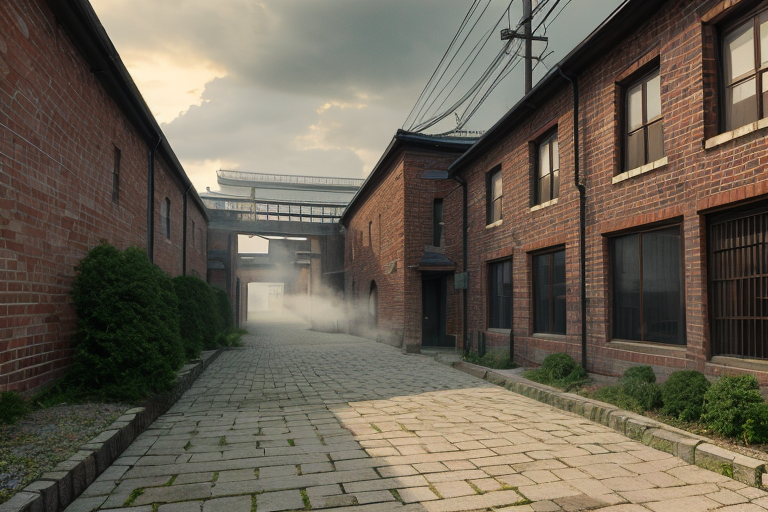
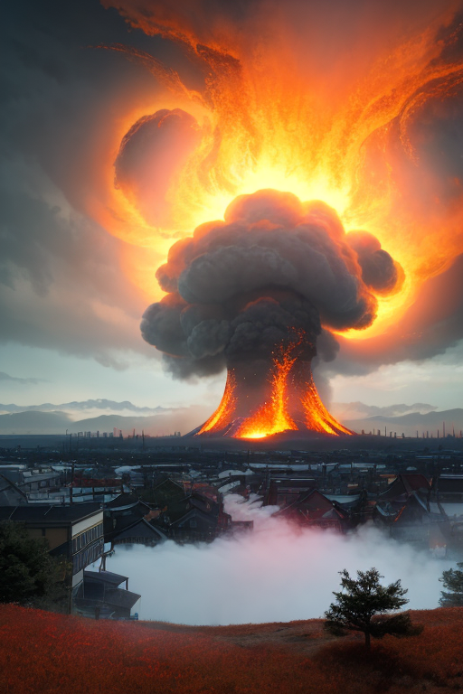
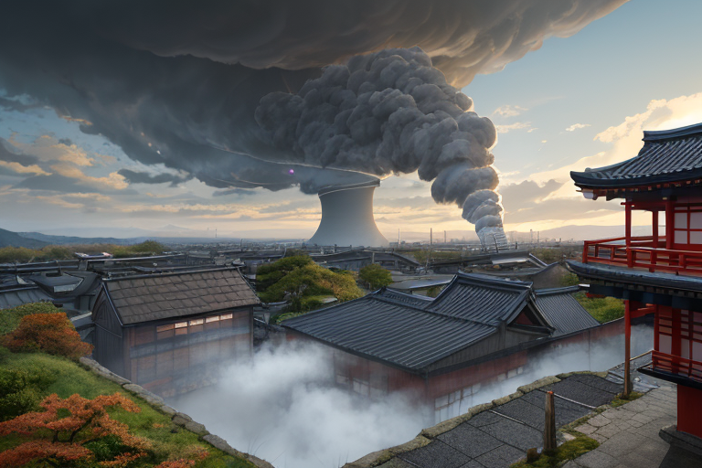
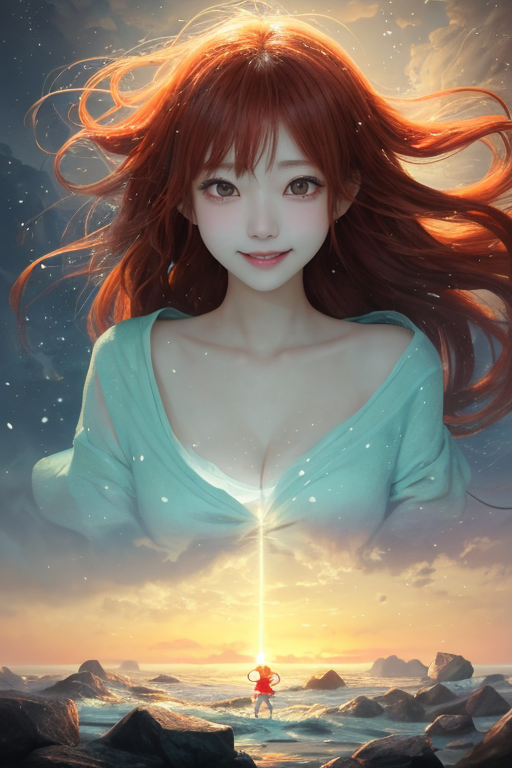
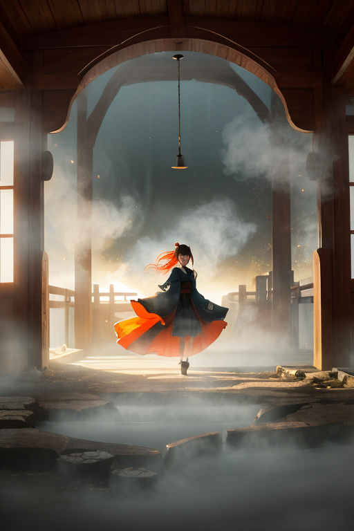

第一章 現実の群馬
あなたはまだ気づいていない。この土地にも、王がいることを。
富岡製糸場の赤レンガは、からっ風にさらされ続けている。明治五年、この地に吹き込んだ近代化の風は、絹の糸とともに多くの人生を紡ぎ、変えた。今は静かな博物館だが、その煉瓦の一つひとつには、かつてここで働いた女工たちの息づかい、未来へ向かう昂揚と不安が、目に見えない糸のように張り詰めている。それは歴史の「歪み」そのものだ。あまりに急激な変化は、土地に微細な軋みを残す。
その軋みを、誰かが調整している。
建物の屋根の上で、灰色と橙色の紋章が一瞬、風に揺らめいた。ヴェントラだ。彼女は目に見えない気流の乱れを手のひらで撫でるように整えながら、ため息をついた。
「また、懐かしさの波が来るよ。あの頃を思い出す人が増える時間帯だ」
地中からは、湯気のような妖精、オンセンナの声がかすかに聞こえる。
「熱いわ。この土地の記憶は、いつも熱い」
彼らが調整するのは物理的な災害だけではない。積もりすぎた歴史の情感が、現在を歪めないように。それもまた、この国の王の役目だった。

第二章 歪みの兆候
富岡製糸場の赤レンガに、からっ風が鋭く当たる。ヴェントラはその風の切れ目に立ち、眉をひそめた。風の中に、時代の軋みが混じっている。明治の熱気、女工たちの息遣い、繰糸器の音。それらが百年の時を超え、今この瞬間の気圧を微妙に乱す。
「懐かしさだけじゃない」グンマリア・ヴェントが低く言った。「あの時代の『変わらなければ』という焦りが、地層のように積もっている。それが時折、現在の地盤を揺さぶる」
彼の言葉通り、付近の地中ではオンセンナが苦悶の声を上げていた。製糸場がもたらした近代化の熱量は、この土地の地熱そのものを変え、今も安定しない湯脈を生んでいる。歴史の転換点は、物理的な歪みとしても残るのだ。
風王は目を閉じ、流れてくる情感の風を全身で受け止めた。変わろうとする意志。それに付随する不安と希望。彼を動かす風は、この土地が幾度も経験してきた「変革の気流」そのものだった。

第三章 王の葛藤
富岡製糸場の煉瓦は、冷たいからっ風にさらされていた。グンマリア・ヴェントはその屋根の上に立ち、目を閉じていた。彼の感覚には、二つの大きな流れが映る。一つは、製糸場を中心に渦巻く「変革の熱気」。近代化という名の、止めようのない風だ。もう一つは、草津や伊香保の地底で、その熱気に煽られて不安定に脈打つ地熱。オンセンナの必死の調整が、かすかに伝わってくる。
彼は調整者だ。変革そのものを止める権限はない。しかし、その付随する歪み──この場合は地熱の暴走──を緩和することはできる。緩和すれば、変革はより穏やかに進行する。だが、変革とは往々にして、ある種の痛みを伴う疾風のようなものではないか。緩和することが、果たしてこの土地のためになるのか。
「動かす風は…」
彼は呟いた。自由奔放な彼が、初めて足を止めた。彼を動かすもの。それは、この土地が自ら選び、切り拓こうとする「風」そのものだ。ならば、王の役目は、その風が吹き荒れるのを傍観することではない。風が木を折らず、家を倒さぬよう、微かにその向きを整えることだ。
彼は目を開け、両手を広げた。

第四章 妖精との対話
草津温泉の湯畑から立ち上る湯煙が、からっ風に攫われ、瞬く間に空へと解き放たれた。
「王よ、あなたの躊躇が風を淀ませている」
ヴェントラが、湯煙の流れに乗って現れた。その声は、熱気を含んだ風のようだった。
「この土地は常に風に揉まれてきた。富岡の糸も、山を越える交易路も、全ては変革の風が運んだ。時にそれは家屋を揺らし、時に人を転ばせる。だが、止めてはならない。我々が為すべきは、風そのものを否定することではなく、その通り道に転がる石を、ほんの少しだけどかすことだ」
オンセンナが地熱の唸りと共に言葉を継ぐ。
「地の底の圧力は、逃げ場を求めている。無理に蓋をすれば、歪みは別の場所で噴出する。湯煙のように、少しずつ、持続的に解放する術を見出さねば。あなたを動かす風とは、この土地が次へと向かおうとする、その『勢い』そのものでは？」
風王は、妖精たちの言葉に、自らが感じた「痛み」の正体を見た。それは変革の代償であり、避けられないものだった。ならば、彼の役目は――。

第五章 微調整と余韻
富岡製糸場の煉瓦壁に、からっ風が鋭く当たる音がした。風王は、その風に乗って、歴史の一点へと向かった。明治五年。富岡製糸場が操業を開始し、近代という巨大な歯車が回り始めた瞬間。彼が見たのは、西洋の技術に戸惑いながらも糸車を回す女工たちの姿だった。そして、その背後の地盤に、あまりにも急激な変化への「歪み」が蓄積されつつあるのを感じた。それは、やがて大きな亀裂となって現れる予定だった。
風王はためらわなかった。ヴェントラとオンセンナが調整する風と湯煙の流れを、一点へと集中させた。歴史の流れを、ほんの少しだけ曲げる。亀裂が生じる代わりに、無数の小さな軋みを土地に分散させる。それは、王として許された最大の、そして唯一の介入である。
代償は即座に訪れた。彼の体を構成する風と湯煙の一部が、歴史の重みに押し潰され、消滅した。痛みというより、存在そのものが薄れる喪失感。しかし、製糸場の地盤は、かすかに、しかし確かに息を吹き返した。軋みは、その後百年をかけて、この土地の強靭な気質として人々に受け継がれていく小さな試練となった。
風王は、草津温泉の湯煙の中に佇んだ。失ったものは戻らない。だが、彼を動かす風は、もう迷いがない。変革の勢いそのものを受け止め、その余韻が人を傷つけぬよう、微調整し続ける風。それが、彼自身の答えだった。
あなたの町にも、王がいる。